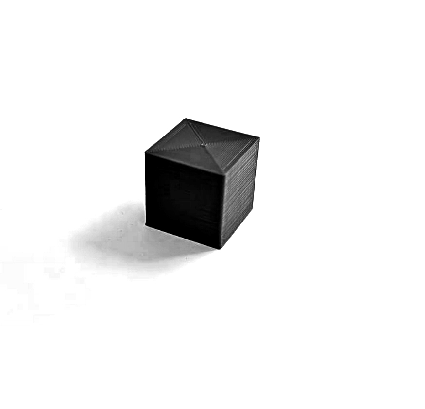
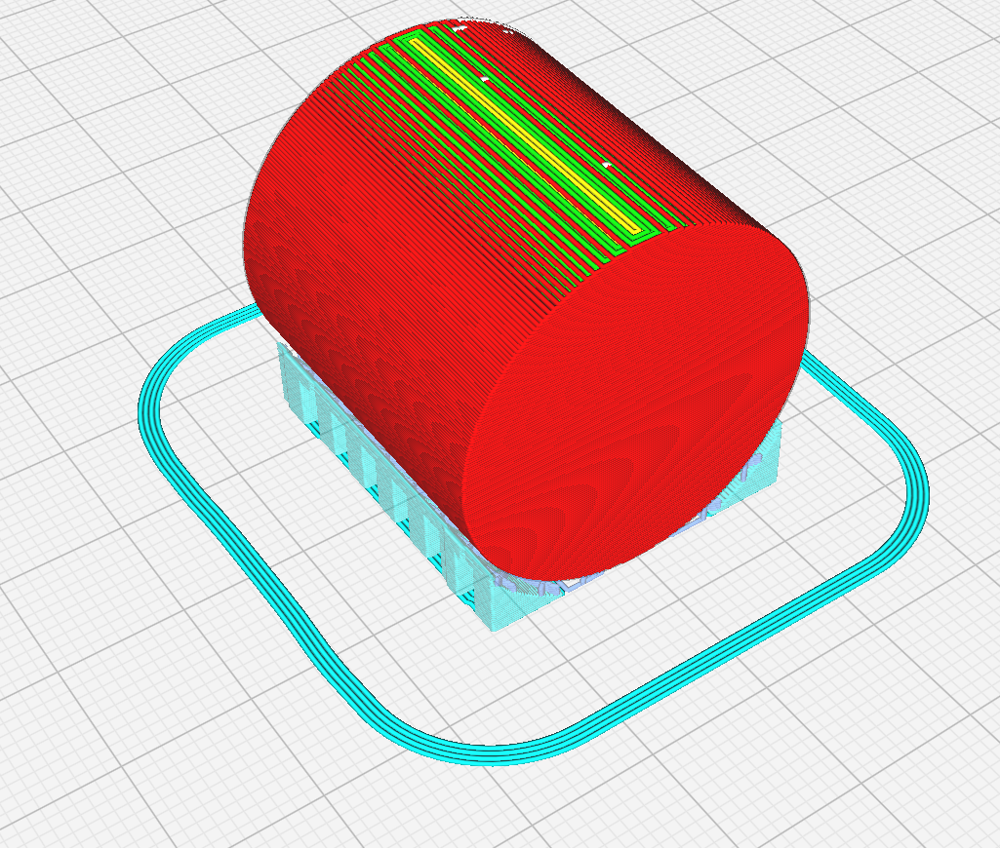

A03: 3D Printing!
-- SET UP --
I acquired an Artillery SW-X2 duw to its large print volume of 300mm x 300mm x 400mm. This model also comes with autoleveling features, AC-powered heated plate, autocontinue and direct drive in the extruder, which provides more stability.
It claims to be 95% assembled - in essence all you have to put together is the Z gears vertically. The biggest hurdle it asks you to perfom is loosening or tightening all gears, it is hard to know exactly how loose or hard they need to be based on the descriptions. I set them up to be movable to light touch without jolting.
-- CALIBRATION --
While this machine comes with autoleveling features, in reality it is just an offset it attepts to apply to your print. It uses a sensor detecting how high is the extruder from the bed in a 5x5 grid, creates a matrix for the heights and saves it for future prints.
However, it is recommended to do a manual calibration first, this way the offset the machine applies to prints remains minimal. For this, you are instructed to level the bed until a piece of paper has a slight drag in each of the 4 corners of the machine. It is a bit tedious, but is good knowing that you can fine tune the machine manually and get it to optimal performance when auto leveling.
-- TEST PRINTS --
For purposes of this excersise, we focus in creating the following shapes:
-- PRINT A, B, AND C --
WHAT: 3 cubes, 20mm x 20mm x 20mm, with Low (Print A), Standard (Print B) and Super Quality (Princ C) settings.
DURATION: 30, 38, and 50 minutes respectively.
OBSERVATIONS: For some reason, standard quality seemed more "rugged" to the light than lower quality, however, layers in the lower setting are indeed thicker. High quality yields really impressive results, but took 50% more time than the other two. All these printed between 30 to 50 minutes each.
From the three prints, higher quality was the one with closer measurements to the original, with just .01 mm difference. Height was the one with more variations across all three figures, ranging from .05 to .1 mm in difference.
[From left to right, Cube A, B, and C]
-- Print D --
WHAT: A 20mm x 20mm x 20mm cube with concentric top and bottom.
DURATION: 37 minutes. Standard quality.
OBSERVATIONS: It took me a while to understand that concentric settings are packed under an array of other settings that you can choose to show or not show.

-- PRINT E, F, G, H --
WHAT:
PRINT E>> A 300mm. dia. x 300 mm tube with one extrusion wall thickness.
PRINT F>> A 300mm. dia. x 300 mm tube with two extrusion wall thickness and random Z alignment.
PRINT G>> a 300mm. dia. x 300 mm cylinder with .1 export tolerance
PRINT H>> A 300mm. dia. x 300 mm cylinder with .001 export tolerance.
TOTAL DURATION: 1 hour, 57 minutes.
OBSERVATIONS: For this print, I finally learned that different settings can apply to each model! You can override the general settings by clicking on the menu shown below. This allowed me to select different wall thicknesses for Print E and F, and import G and H without issues.
However, print time does not change considerably. The only real time benefit comes in avoiding multiple breaks to reload material and waiting for the plate to cool if looking for a smooth detachment.
[Left to right, top to bottom, Print E, F, G, and H]
[Print E and F, left to right]
For print E and F, we used 2 different settings of wall extrusions. Print E has only one wall layer, which makes the structure inside more noticeable than in Print F. Likewise, Print E has a regular Z alignment, which makes the seam very perceivable. However, I did not like how the Z joints where spread across the entire shape in shape F with the random alignment. However, I believe after sanding, it might yield the best results.
Then for the cylinders:

[Print G and Print H, left to right]
Print G was exported from rhino with a tolerance of .1 mm. while Print H had a tolerance of .001. If paying close attention to the photos is clear how the first cylinder (G) is much more jagged than the second one around the circle edges.
However, it appears that Print H kept a random Z alignment, whioch does not seem to have benefitted the shape that much. This print looks messy and unclean. While print G remained steady. I wonder if this can be a byproduct of having too much definition.
--PRINT I --
WHAT: A single cylinder using "Spirize Outer Control"
DURATION: 30 minutes, standard quality. (.2 mm high, 2 wall thickness)
OBSERVATIONS: This method ensures almost no Z "start points" which can be messy and unclean. It produces a single wall layer, which means it is not very strong. Likewise, it is not able to create enclosures at the top or multi-shape prints since it needs to follow a continues sloping extrusion throughout the model.
--Print J --
WHAT: A 300mm. dia. x 300mm. cylinder on its side, with supports.
TIME: 1 hour, 10 minutes. Standard quality (.2mm height, 3 layer thickness)
OBSERVATIONS: This was the most difficult part of the assignment. I had sticking issues with the bed. I increased the temperature from 70 to 80 degrees for the bed, and from 215 to 220 degrees celsius for the nozzle.

-- Print K --
What: A series of nested cube frames in 3 unique sizes.
Time:
OBSERVATIONS: The biggest challenge with these was that they would require support in order to interlace as they do. Cura recreated very tall supports, which were impossible to remove neatly. I am interested in knowing if there is a better approach to this.